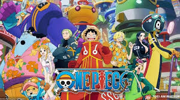
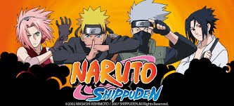
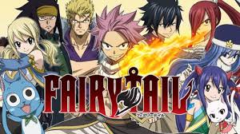
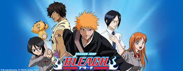
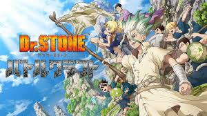

One Piece
Luffy, transformé en homme élastique après avoir mangé un fruit du démon, rêve de devenir le roi des pirates et de trouver le mystérieux “One Piece”. L'ère des pirates bat son plein, Luffy au chapeau de paille et son équipage affronteront des ennemis hauts en couleurs et vivront des aventures rocambolesques !

Naruto
Le ninja le plus puissant de Konoha à l'époque, Minato Namikaze, a réussi à sceller ce démon dans le corps de Naruto. C'est ainsi que douze ans plus tard, Naruto rêve de devenir le plus grand Hokage de Konoha afin que tous le reconnaissent à sa juste valeur.

Fairy Tail
Lucy est une jeune magicienne de 16 ans à la recherche d'une guilde. Fan de magie depuis sa plus tendre enfance, elle lisait régulièrement des magazines sur les guildes, et a finalement voulu en intégrer une. Dans ce but, elle est devenue magicienne des clés stellaires, un mage capable d'appeler des esprits avec qui il a conclu un pacte au moyen de clés.

Bleach
Adolescent de quinze ans, Ichigo Kurosaki possède un don particulier : celui de voir les esprits. Un jour, il croise la route d'une belle Shinigami (un être spirituel) en train de pourchasser une "âme perdue", un esprit maléfique qui hante notre monde et n'arrive pas à trouver le repos.
Blue Lock
Coupe du monde 2018, l'équipe de football du Japon est éliminée en huitièmes de finale... Ce nouvel échec incite l'Union japonaise de football à fonder le "Blue Lock" : un centre de formation révolutionnaire rassemblant les 300 meilleurs attaquants lycéens du pays.

Dr Stone
Taiju, un lycéen tokyoïte, est un jour victime d'un phénomène mystérieux : en une fraction de seconde, l'humanité entière est transformée en pierre ! Des milliers d'années plus tard, à son réveil, il décide de rebâtir la civilisation à partir de zéro avec son ami Senku !